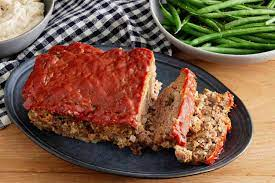

Meatloaf

Description
This meatloaf recipe is easy to make and can be made with
ingredients usually found around the house. Great for the whole family.
Ingredients
- 2 eggs
- 1 cup bread crumbs
- 1/2 cup ketchup
- Tbs mustard
- 1/8th cup brown sugar
- 2 lbs ground beef
- 1/4 cup shredded cheddar cheese
Steps
- Preheat oven to 350 degrees
- Combine beef, bread crumbs, 1/4 cup of ketchup,
mustard and eggs together in large mixing bowl
- Mix ingredients well together by hand and trasnfer contents into loaf pan
- Use remaining ketchup to put on top of loaf and
sprinkle the top with the brown sugar
- Cook in preheated oven for 50 minutes
- Remove from oven and put cheese over the top of the loaf
- Cook for an additional 15 minutes or until no longer pink in center